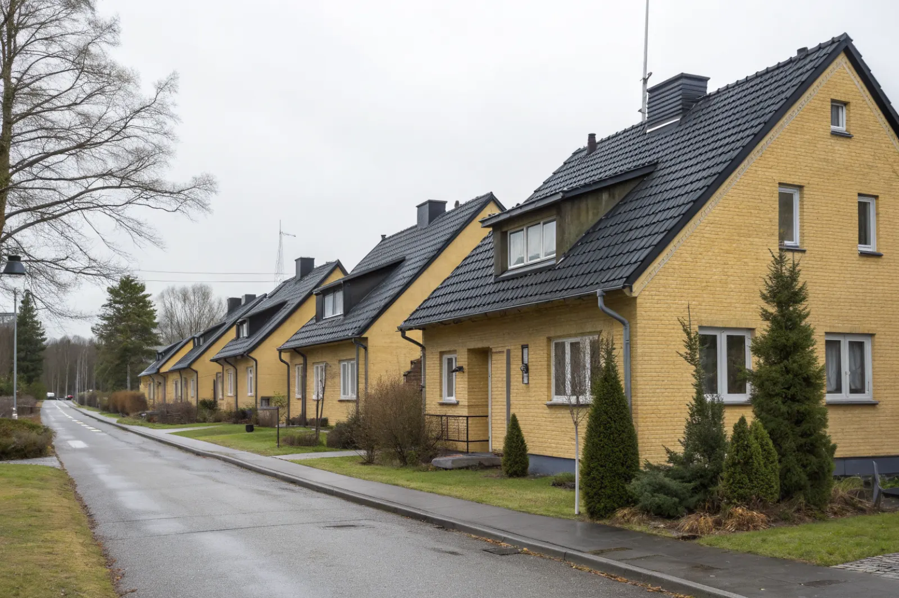

Takbyte i Vällingby
Byte av tegel-, betong- och plåttak.
Takbyte i Vällingby →Vällingby är 1950-talets ABC-stad i västerort, med radhus, kedjehus och lamellhus kring Vällingby centrum. Vi är takläggare i Vällingby för villor, radhus och samfälligheter i bland annat Råcksta, Grimsta, Kälvesta, Nälsta och Vinsta.
Vällingby planerades som en ABC-stad – arbete, bostad, centrum – och centrum invigdes 1954. Närmast centrum byggdes lamellhus och punkthus, och längre ut radhus, kedjehus och villor. Mycket av bebyggelsen är från 1950- och 60-talet och har nu passerat en eller två takgenerationer.
Radhusen har ofta låga sadeltak eller pulpettak med betongpannor, papp eller plåt. I Kälvesta och Nälsta finns också villor och kedjehus från 1960- och 70-talet, medan andra delar har inslag av äldre småhus.
Många radhus förvaltas av samfälligheter eller bostadsrättsföreningar, där taket är en gemensam fråga. Vi lämnar underlag som styrelsen kan fatta beslut på och planerar arbetet länga för länga.
Oavsett om du behöver ett komplett takbyte eller en riktad renovering ger vi en tydlig bedömning och offert. Vi arbetar även i grannområden – se alla områden vi arbetar i.

På 1950–60-talets radhus är takfoten ofta kort och luftspalten mellan isolering och yttertak knapp. När vinden har tilläggsisolerats ser vi ofta kondens och mögel på råsponten trots att taket är tätt. Mellan husen i en länga är brandväggarnas plåtavtäckningar typiska läckagepunkter.
Lamellhusen kring centrum har ofta låglutande tak med papp eller plåt, där skarvar, brunnar och genomföringar för ventilation behöver ses över regelbundet.
Vällingby är ett av Stockholms mest kända efterkrigsområden, och stadsplanen tar hänsyn till dess kulturhistoriska värde. Vid byte av material eller kulör på radhus eller villor är det därför klokt att kontrollera detaljplanen hos Stockholms stad innan ni bestämmer er.
I radhusområden blir resultatet bäst om hela längan byts samtidigt – då blir kulör och höjder lika och anslutningarna mellan husen kan göras om. Enskilda hus går också, men då är anslutningen mot grannen extra viktig.
Byte av tegel-, betong- och plåttak.
Takbyte i Vällingby →Riktade åtgärder som förlänger takets liv.
Takrenovering i Vällingby →Bedömning av skick inför beslut.
Takbesiktning i Vällingby →Nytt ytskydd på plåttak.
Takmålning i Vällingby →Skonsam tvätt och mossbehandling.
Taktvätt i Vällingby →Nytt plåttak och plåtarbeten.
Plåttak i Vällingby →Vällingby ligger bara några kilometer från vår bas i Mariehäll, Bromma. Vi kan därför komma ut på besiktning med kort varsel och följa arbetet på plats.
Läs mer om tak på villa eller jämför takbyte och takrenovering innan du bestämmer dig.
Vi arbetar även i Hässelby.
Takläggare i Hässelby →Vi arbetar även i Bromma.
Takläggare i Bromma →Vi arbetar även i Spånga.
Takläggare i Spånga →Vi arbetar även i Ekerö.
Takläggare i Ekerö →